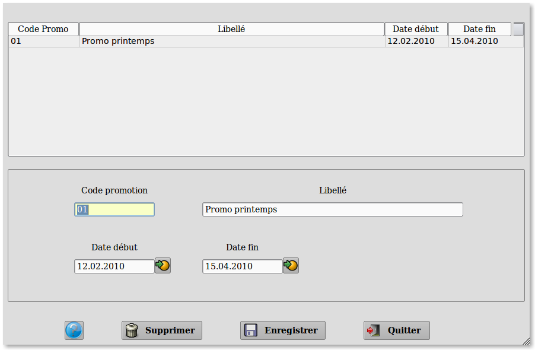
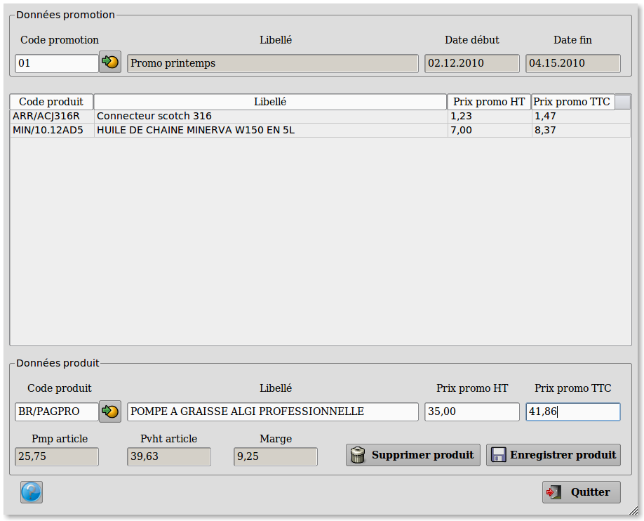
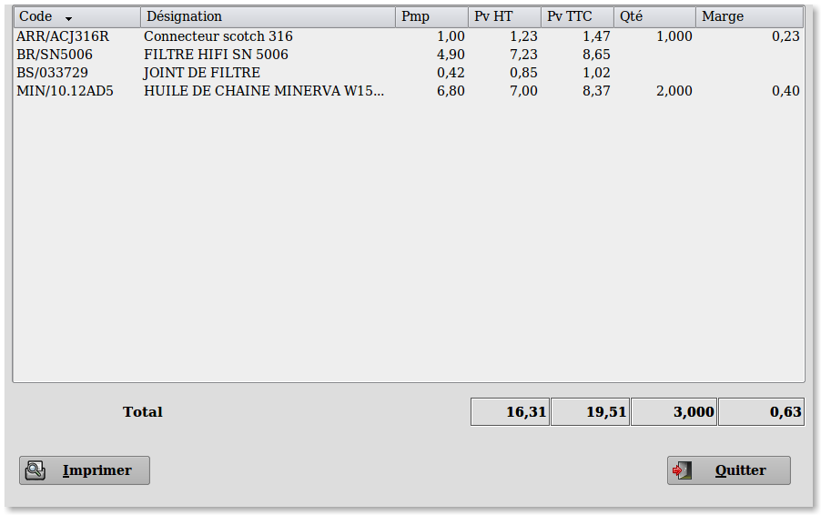
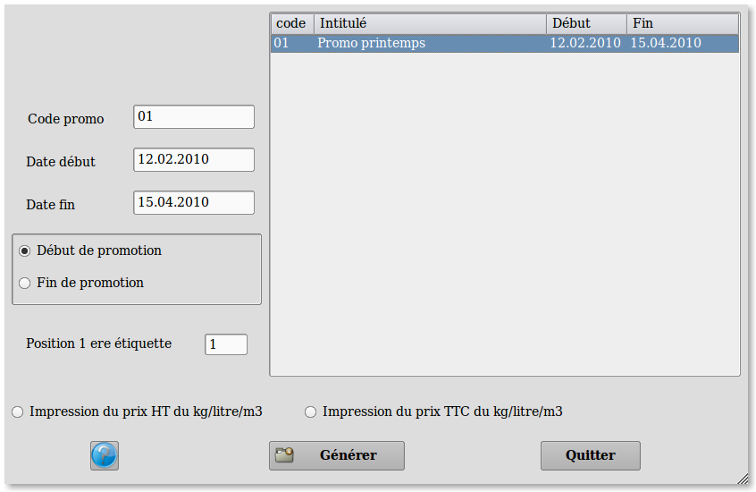
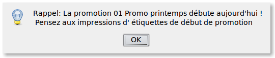

~ Comptabilité et Facturation Laurux ~

~ Comptabilité et Facturation Laurux ~ |
|
|
|

Cette table va servir à la création ou suppression des promotions.
On va
donner un code à la nouvelle promotion. Ce code aura 6 caractères
alphanumériques maximum.
Le libellé de la promotion aura 50
caractères alphanumériques maximum.
On saisira ensuite les dates de début
et de fin de promotion.

Le programme " Articles en promotion " va permettre la saisie des produits en promotion.
Les produits peuvent être saisis manuellement
si on connait leur code, sinon on utilisera le bouton de recherche. Le
libellé, le pmp, le prix de vente HT s'affichent. On saisira alors soit
le prix de vente HT promo, soit le prix de ventte TTC promo. La marge
se calculera à partir du Pmp du produit et de son prix de vente promo
HT.
Le pmp du produit en promotion est le pmp du produit
lors de sa mise en promotion. Ce pmp est figé dans la table des
promotions et ne sera pas modifié même si dans la fiche produit il est
recalculé suite à des entrées de marchandises.

Le menu " Statistiques promotions "
permet de visualiser et d'imprimer les statistiques pour chaque produit
avec le total de la promotion en bas d'écran.

Ce programme permet l'impression des
étiquettes de gondole pour le début et la fin des promotions. Les
étiquettes de début auront la prix
promotion ainsi que le mention "Prix promo".
Après la création des promotions, Laurux va
controler, à chaque lancement du programme, si la date du jour correspond à une date
de début ou de fin de promotion. Si c'est le cas, alors un
message s'affichera.

Dès lors, les prix de vente utilisés en facturation
et en caisse seront les prix promotion. Une ligne supplémentaire
mentionnant la mention "Prix promo" s'affichera et sera imprimée sur la
facture ou le ticket de caisse.
Aucune remise,
manuelle ou automatique, n'est posssible sur un produit en promotion.
En fiche
article, l' appel d'un produit en promotion provoquera également
l'affichage d' un message.
----------------------------------------------------------------------------------------------------------------------